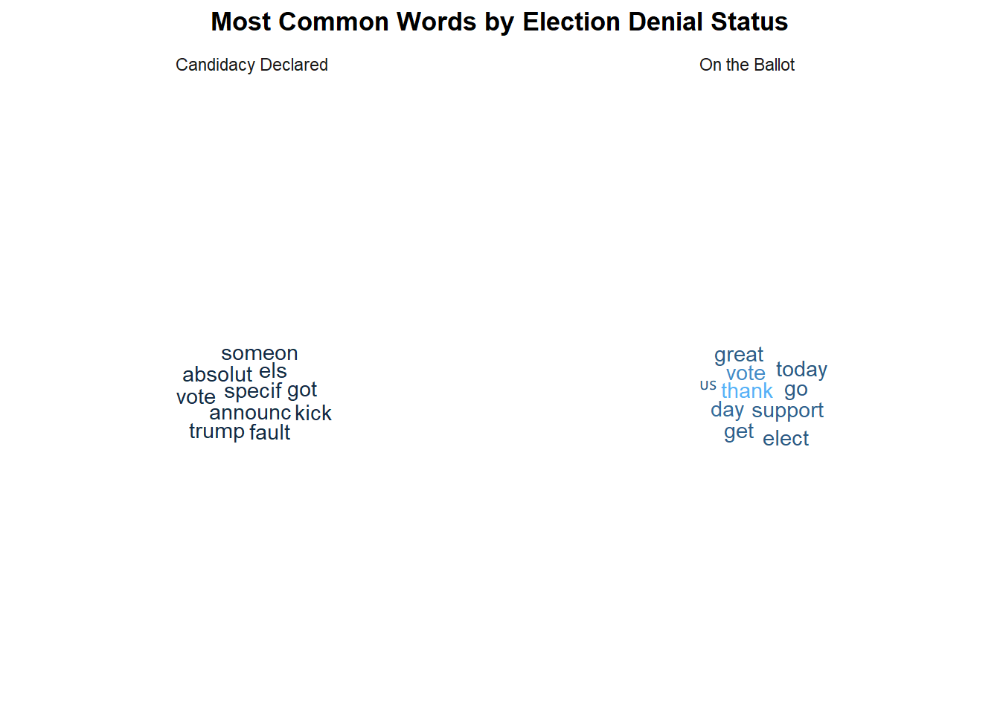

setwd("C:/Users/helen/OneDrive/Documents/Georgetown/F2025/text_analysis/problem-set-01-2025-helenw566/")
pacman::p_load(
dplyr,
purrr,
tidyr,
ggwordcloud,
quanteda,
quanteda.textstats,
preText,
tidytext,
quanteda.sentiment,
quanteda.dictionaries
)Text as Data: Problem Set 01
Instructions
To complete this homework, you have two options.
You can either complete this assignment using a dataset of your choice. This is a great opportunity for you to start working with a dataset that you can potentially use for your final project.
Your second option is to this dataset of social media posts from political candidates running for Congress during the 2022 U.S. Midterm election.
You can download the dataset here
To know more about the dataset, read and cite this paper: https://journals.sagepub.com/doi/full/10.1177/20563051251337541
If you want say thanks to the people who collected and shared this data with us for this class, please send a email to my colleague Maggie MacDonald
IMPORTANT: Remember to NOT commit your data to github. Github does not allow you to push large datasets to remote repositories. If you commit your dataset, you will need to reset your commit, and that’s always a bit of work. In addition, remember that your notebook should be compiled with the results of the code blocks.
Gen AI Use:
ChatGPT was consulted to deal with memory issues related to calling multiple textstat_simil(). Code was edited in response to reduce memory use, main changes being computing only one similarity matrix rather than 10 (1 for each reference document) and to see which similarity measure would be more memory-efficient. Also was consulted for Q6.2 in regards of how to run KIWC.
Question 1
Take a small a sample of your documents and read them carefully. This sample doesn’t need to be random. Select cases that are more interesting, and close to your theoretical interest in this dataset. What are you thoughts about these documents? What did you learn after reading them?
# read in file
df <- read.csv("data/midterm_candidates_labeled_all_May05.csv")
# look at a random sample
df %>%
slice_sample(n = 25) %>%
pull(text) [1] "@scottbraddock He’s running for Governor and not King."
[2] "Early vote today for #JenniferRuthGreen and tag us in your social media post to show your strong support! üíö üá∫üá∏\nFind an early voting location near you at https://JRG.gop/vote! #IN01"
[3] "Truth."
[4] "The district is frustrated with Bergman's dangerous rhetoric, divisive tactics and dishonest advertisements, but, when they go low, stay focused on the issues and hold your heads and ùóºùòÇùóø signs high. \n\nGreat job in the field today, everyone. Beat Bergman at the polls. (3/3)"
[5] "Thanks to everyone who came out to blockwalk training at Comal GOP! #TX21 #StandUpForAmerica https://t.co/cIs9eFhGwu"
[6] "Thank you ü´∂üèº"
[7] "My mother would often tell me \"never forget who you are, where you come from, and the people who helped you get there.\" With your support, I stand recommitted to fighting for you each day.\n\nOur rights are on the ballot this election. Make your voice heard and VOTE! https://t.co/O3uHp04sCc"
[8] "I am looking forward representing the conservative values I was raised on as your Congressman in DC. \n\nThank you @NCValues Coalition for the endorsement! \n#ncpol #nc13 https://t.co/jyBrYAIt6Z"
[9] "While other campaigns had multiple paid field staff on DC payroll, we had 1 and he moved mountains with our small but mighty team to make us one of the best producing field programs in the country.\n\nBut he and I both knew that to get us where we needed to be, we needed more. 18/"
[10] "Anyone with questions they'd like to ask during the debate at 7 p.m. on WTTW Thursday can send questions to Michael Puente Journalist and Tinisha Shade Spain. Tag #IllinoisSenateForum on Twitter!!"
[11] "Excellent reporting by @CBSNews & @CBS_Herridge ⬇️ https://t.co/bdJKffmjAD"
[12] "@MerissaHansen17 Yes, but are you willing to fight?"
[13] "We are lost. https://t.co/tQKbY4UGwu"
[14] "Los republicanos han presentado un plan para limitar la salud reproductiva en todo el país. Salazar votará al pie de la letra con sus amigos extremistas. En noviembre, le ganaré."
[15] "Having a great time in @CityofDelRio enjoying some Fiesta de Amistad events!\n\nVoters in #VelVerdeCounty are ready to vote blue all the way through!\n\nThey want a U.S. Rep who shows up & is accessible to the public. \n\nI am committed to do so! üá∫üá∏ https://t.co/ksfMMiQOkv"
[16] "Help me end the Pelosi Speakership. https://t.co/uHkKfl2lnN https://t.co/PzTfExTqO9"
[17] "3️⃣0️⃣ Diners, 3️⃣0️⃣ Days!\n\nToday, I kicked off my 30 Diners in 30 Days tour at Main Street Station in Plymouth!\n\nIn the next month, I'll visit diners, restaurants and small businesses across New Hampshire to sit down with Granite Staters and discuss the issues they care about most. https://t.co/8Oma9jZe4Y"
[18] "Thanks to the Palm Springs Firefighters Association Local 3601 for their support and keeping our community safe!"
[19] "Little moment of levity. https://t.co/yvmmPJUbEb"
[20] "An incredible evening in Sierra Vista! After my opponent cancelled attending our scheduled Cochise County debate tonight, #TeamCiscomani still showed up to knock doors and meet voters. While she continues to ignore rural Arizona, I remain committed to our entire district. #AZ06"
[21] "I want to thank Mississippi Insight for hosting me the other night as a guest. I enjoyed getting to discuss issues that matter most to voters in our district, like real leadership, good paying jobs, support for small businesses, and investments in education for our youth. Check out the full video here:"
[22] "It's time to get organized and get your Souls to the Polls! Pick a great day for your organization, gather your crowd and get yourself to the polls to EARLY VOTE for #EmiliaSykesforCongress. To find your early vote center or neighborhood polling location, visit emiliasykesforcongress.com/the-district:=:https://www.emiliasykesforcongress.com/the-district and for more information email jasina@emiliasykesforcongress.com"
[23] "Caption this üëá https://t.co/CosBVNHN25"
[24] "If you are in Boone, come on out! #ncpol https://t.co/vRPY3gPApk"
[25] "The mainstream media LOVES Woke Dems who eat up all their propaganda. They NEVER think for themselves! STOP listening to their lies and go to REAL sources of information like TRUTH SOCIAL." The content of the documents seem to vary widely–while largely written with a political agenda in mind, the texts seem to include everything from descriptive statistics, personal attacks against select politicians, support for political allies, calls of action for specific agendas, dissemination of campaign ideals/logistics, personal social interactions, etc. As expected from social media data, there’s liberal use of hashtags, emojis, referencing to specific accounts, and links, which will have to be considered during preprocessing.
Question 2
Tokenize your documents and pre-process them, removing any “extraneous” content you noticed in closely reading a sample of your documents. What content have you removed and why? Any pre-processing steps from what you saw in class that you consider not to use here?
df_corpus <- df %>%
#removing NA text
filter(!is.na(text)) %>%
#convert to corpus
corpus(text_field = "text") %>%
#remove punctuation and numbers
tokens(
remove_punct = TRUE,
remove_numbers = TRUE,
verbose = TRUE
) %>%
#lowercase
tokens_tolower() %>%
#remove stopwords
tokens_remove(stopwords("en")) %>%
#stemming
tokens_wordstem() %>%
#convert to dfm
dfm() Creating a tokens from a corpus object... ...starting tokenization ...tokenizing 1 of 2 blocks ...preserving hyphens ...preserving elisions ...preserving social media tags (#, @) ...tokenizing 2 of 2 blocks ...preserving hyphens ...preserving elisions ...preserving social media tags (#, @) ...removing separators, punctuation, numbers ...174,893 unique types ...complete, elapsed time: 12.6 seconds.Finished constructing tokens from 134,529 documentsdf_corpus_trim <- df_corpus %>%
#trim for common and rare words
dfm_trim(min_docfreq = 0.0005,
max_docfreq = 0.99,
docfreq_type ="prop",
verbose = TRUE) dfm_trim() changed from 141,296 features (134,529 documents) to 3,619 features (134,529 documents)In this case, I primarily removed punctuation, numbers, stop words, and also trimmed the document to remove common words and rare words. I also did some equivalence mapping via stemming. While removing symbols were an option, given that we’re working with social media data, I thought keep hashtags and @s could allow us to retain important context so I retained those. I also avoid lemmatization as I already had conducted stemming and I did not want to reduce the complexity of the document too much by doing both. When trimming the document, I applied a much stricter bench mark for minimum document frequency versus maximum document frequency. While playing around with different options, I noticed that minimum document frequency appeared to play a more significant role in trimming (i.e. changing max_docfreq from 0.99 to 0.999 while holding min_docfreq constant had no effect while changing min_docfreq from 0.0001 to 0.0005 while holding max_docfreq constant led to a change from 9947 features to 3619). To reduce noise and to reduce computational expense, I took on a moderate approach to document trimming.
Question 3
Using Danny and Spirling’s Pretext, tell me which of the pre-processing steps makes a more substantive difference in the data transformation? Would you keep all these steps or would you follow the PreText recommendations? Use a sample of the data to solve this question.
In this case, it appears “Remove Infrequent Terms” is the one that will lead to the most substantive differences when it comes to preprocessing, as it is the only one that is both (1) positive and (2) significantly different. The rest appear to result in nonsignificant differences. In this case, my approach largely conforms with preText’s analysis. I’m using largely the same preprocessing approach and I am also taking a moderate approach to removing infrequent terms. However, I would elect to still remove some infrequent terms (rather than avoid taking them out altogether) given the high dimensionality of the current dataset. Retaining all 141,296 tokens is impractical and too computationally expensive to really be a feasible option.
Question 4
Pick an important source of variation in your data (for example: date, author identity, location, etc.). Subset the data along this dimension, and discuss which words discriminate better each group. You can do this by using TF-IDF, PMI, log(share \(word_i\) in group a/share \(word_i\) in b), or create a measure similar to Ban’s article.
#checking options for variation
df_corpus_trim@docvars %>% colnames() [1] "docname_" "docid_" "segid_" "X"
[5] "created_at" "username" "name" "platform"
[9] "party_clean" "office_type" "office.name" "gender"
[13] "incumbent." "candidate.status" "wonprimary" "vote"
[17] "participation" "fundraising" "audience" "engagement"
[21] "election_denial" "trump_endorsed" #using tf-idf so see which words discriminate better for each group
tfidf_terms <- df_corpus_trim %>%
#performing tf-idf
dfm_tfidf(scheme_tf = "prop") %>%
#group by candidate status
dfm_group(candidate.status, force = TRUE) %>%
#convert and pivtot
convert(to = "data.frame") %>%
pivot_longer(
cols = !doc_id,
names_to = "word",
values_to = "tf_idf"
) %>%
rename(status = doc_id) %>%
group_by(status) %>%
#check top 10 words
arrange(desc(tf_idf)) %>%
slice_head(n = 10)
#plotting word clouds to visualize
tfidf_terms %>%
ggplot(aes(
label = word, color = tf_idf)
) +
geom_text_wordcloud() +
theme_minimal() +
facet_wrap(~status) +
labs(title = "Most Common Words by Election Denial Status") +
theme(
plot.title = element_text(face = "bold", hjust = 0.5)
) 
Here, I’m using “Candidate Status” as source of variation. We see that those who were on the ballot appear to be using language more centered on spurring voters to vote, notably having multiple references to “elect”, “day”, and “vote.” It also seemed to cater more towards thanking voters for their support. In contrast, candidates that were not on the ballot appeared more likely to use language centered around some kind of announcement, notably “announce” and the most common words seem to suggest that their declaration was tied to removing someone from office or “trump”, either as a result of his endorsement or otherwise.
Question 5
Create a dictionary (or use a pre-existing dictionary) to measure a topic of interest in your data. It can be anything, sentiment, tone, misinformation, any topic of interest. Label your documents, and visualize the prevalence of your classes.
#adding sentiment scores
sentiment_doc <- docvars(df_corpus_trim) %>%
#adding document id
mutate(doc_id = docnames(df_corpus_trim)) %>%
#adding dictionary counts
merge(
df_corpus_trim %>%
dfm_lookup(dictionary = data_dictionary_LSD2015[1:2]) %>%
convert(to = "data.frame"),
by = "doc_id"
)
sentiment_doc %>%
#determining top sentiment
mutate(
major_sentiment = ifelse(
positive > negative, "Positive", ifelse(
negative > positive, "Negative", "Neutral"
)
)
) %>%
group_by(major_sentiment) %>%
#counting documents by sentiment
summarise(count = n()) %>%
#plotting
ggplot() +
geom_col(aes(x = major_sentiment, y = count, fill = major_sentiment), alpha = 0.7) +
labs(
x = "Major Sentiment",
y = "Count",
title = "Major Sentiment across Social Media Posts by Count",
subtitle = "2022 Midterm Elections",
fill = "Sentiment"
) +
theme_minimal()Question 6
Pick some documents (at least 10 for each class) that are exemplar (high probability) of being for each class of your dictionary. Read these documents. Now let’s try to augment a little your classifier.
set.seed(88)
#get documents with high prob
sample_sent <- sentiment_doc %>%
#only getting documents with one sentiment and high counts for it
filter((positive == 0 | negative == 0) & !(positive == 0 & negative == 0)) %>%
mutate(total = positive + negative) %>%
filter(total > 5) %>%
pivot_longer(
cols = c("positive", "negative"),
names_to = "class"
) %>%
filter(value != 0) %>%
group_by(class) %>%
#randomly select 10 for each class
slice_sample(n = 10)
#retrieve original text
sample_text <- df %>%
merge(
sample_sent,
by = "X",
all.y = T
) %>%
select(class, doc_id, X, text)
sample_text %>% pull(text) [1] "The Early Voting polls are still open for another week before Election Day on Nov. 8th! üî¥ As a Green Beret Veteran, a business owner, and a father, I know the important part Washington politics plays in all of our lives. I believe it is time we have truth and dignity in the House, not just political games or government overreach. I will work to end our continued inflation, strengthen our National Security, and get us closer to Energy Independence, because all Americans deserve better. Learn more about my plans for Congress here ‚ÜôÔ∏è https://www.harriganforcongress.com/"
[2] "This is a must read; \"Crime in 2020 was 60% lower than in 1980. The crime rate began consistently declining in the early 1990s and fell every year between 2001 and 2020. Both property and violent crimes reflect this long-term trend of decreasing crime. Property crime is down 63% since 1980, and violent crime is down 33%. Property crime per 100,000 people ranged from 1,460 in New York City to 6,128 in Memphis...Violent crime decreased since 1991 in 39 states and Washington, DC. It declined by more than 60% in New Jersey, New York, Florida, and Connecticut. Meanwhile, the violent crime rate more than doubled in North Dakota, Montana, and South Dakota.\""
[3] "Thank you for your courage and for putting your country first. Thank you for protecting our country, for your bravery, and for all that you do and have done to make this country safe. Wishing you a very Happy Veteran's day! #VeteransDay #VeteransDay2022"
[4] "Denise and I had such a great night visiting with so many friends and neighbors at the Bartholomew County Republicans Fall Dinner! üá∫üá∏ \n\nOur local county parties are vital to the GOP‚Äôs success, and that‚Äôs why I‚Äôm always happy to lend a helping hand in their mission to elect Republicans up and down the ticket. \n\nRemember to get out and VOTE on November 8th! üó≥"
[5] "Roberta and I are extremely grateful for the support and friendship across the 8th District of Tennessee. \n\nIt is our greatest honor to serve this great state we all call home.\n\nThank you for your trust in us."
[6] "Happy Veterans Day! #NY21 is home to the largest number of veterans of any Congressional District in NY. I was honored to participate in today‚Äôs ceremony dedicating the Essex County Leathernecks Marine Corps League Monument in Crown Point! We thank & honor all of our veterans!üá∫üá∏"
[7] "The horrifying attack on Paul Pelosi is the result of extremist rhetoric that threatens both our democracy and the lives & families of those who step up to serve. Everyone--on both sides of the aisle--must condemn the conspiracy theories that motivate these assaults."
[8] "Alaskans voted for a better future, one where our fisheries are rehabilitated, our rights are preserved, and our families can afford to not only survive, but thrive. I’m happy they did. Now it’s time to make that a reality."
[9] "Yvette Herrell and her friends can’t defend her awful record in Congress, so they’re doing what they do best - lying to get ahead. So here’s the truth. Let’s win #NM02 and elect a real champion for the working class. https://t.co/c4hShu5yYu"
[10] "Thank you to everyone who made last night’s event at Georgia Blue Gallery so special! \n\nThank you to Georgia for hosting us, thank you to Byron Nicholai for your beautiful performance, and thank you to the artists who shared their art with us. #MaryForCongress https://t.co/9l6joOizMy"
[11] "No, any American except a sitting member of the US House or Senate can be indicted for war crimes if they commit one or more war crimes. But the worst war crime is aggression, and I focus on that. Presidents, Secretaries of State & \"Defense\", and judges.\nhttps://t.co/7riUJPharR https://t.co/8iweaELc6X"
[12] "I have no idea how many presidents must be impeached & removed for war crimes before the lesson finally sinks in: become the president, refuse to stop ongoing, illegal, immoral wars of aggression, get impeached & removed. Maybe it'll take only 2 or 3 presidents before they get it https://t.co/xoyzfX90Lh"
[13] "Thank you Narragansett Dems for supporting great candidates who care about working people. \n\nOil and drug companies might be trying to buy Allan Fung a congressional seat, but with your help we’ll keep #CD2 blue! https://t.co/9xt7wfwwh8"
[14] "Any dealmaking with this terrorist regime should be permanently dead.\n\nIran is funding terrorism across the globe, giving missiles & drones to Putin to commit war crimes in Ukraine, plotting to assassinate American officials, and murdering its own children, women & men. #alsen https://t.co/3YuBVUp47C"
[15] "@jackieraimo @Schneider4IL10 @MomsDemand @JudgeRochford @VoteJoyceMason @VoteVega22 @Carissa4LCB7 @RepSchneider Brads afraid to debate because of the truth.Careful who you endorse. I’ve fought for Moms, children and community. Brad looks to profit off pain and didn’t solve any problems. His sister in law shot up a school and he still has no empathy for gun violence victims. \n#loridann"
[16] ".@kdeleon continues to downplay his anti-Black, racist words & actions. He purposely distracts from their ploy to disenfranchise Black Angelenos.\n\nThis wasn’t just “condoning racist language,” it is blatant racism backed by racist policy.\nNow, more than ever, KDL must RESIGN. https://t.co/gFzo91YeTW"
[17] "Wishing you all a Happy Thanksgiving-a day of reflection to count our blessings with gratitude! I’m especially thankful for my family, friends & the many constituents I’ve come to know over the years who have made me a stronger, more dedicated public servant. God bless & enjoy! https://t.co/MmM6Z900Gd"
[18] "The government of Venezuela is deliberately releasing prisoners – including violent criminals convicted of murder and rape. Those same freed prisoners are in the illegal immigrant caravans marching to our border. https://t.co/jBfb7yc9tG"
[19] "Ilhan Omar cannot be allowed to return to congress! She has left us helpless! Our city is worse off than when she was elected! Look at the rampant crime, homelessness, and poverty invading our streets! She could have fixed these problems for our district, but she abandoned us! https://t.co/7QbiXIJs79"
[20] "I’m praying for Paul Pelosi and condemn violence against anyone, no matter who does it. After having my volunteers get assaulted and my family members’ lives threatened, I am disgusted by this violent attack. We need to hold these individuals accountable... https://t.co/ZDgDq0KLLB" Question 6.1
Using cosine similarity, grab the closest 10 documents to each reference document you read before. Read those. How well does the cosine similarity work? Try with another measure of distance. Anything interesting there?
Cosine
#computing cosine similarity in ref to docs
closest_docs <- textstat_simil(
df_corpus_trim,
y = df_corpus_trim[sample_sent$doc_id,],
margin = "documents",
method = "cosine"
) %>%
as.data.frame() %>%
group_by(document2) %>%
#take the top closest docs
arrange(desc(cosine)) %>%
slice_head(n = 10) %>%
rename(
doc = document1,
ref_doc = document2,
cosine = cosine
)
#add text and doc to docvars
docvars(df_corpus_trim, "text") <- df[df$X %in% docvars(df_corpus_trim)$X, "text"]
docvars(df_corpus_trim, "doc") <- df_corpus_trim@Dimnames["docs"]
#add text
closest_docs %>%
#adding text
merge(
docvars(df_corpus_trim) %>% select(doc, text),
by = "doc"
) %>%
#adding reference text
merge(
sample_text %>% rename(ref_doc = doc_id, ref_text = text),
by = "ref_doc",
all.x = T
) %>%
select(class, ref_doc, ref_text, doc, text) %>% View()Using cosine similarity, it appears that the top 10 most similar documents generally appear to have similar sentiments and/or matching topics to the original reference document. This appears somewhat dependent on the overall “extremism” of the original reference document. Reference document that appears more obvious positive or sentiment seem more likely to have “similar” documents that have matching sentiments. Similarly, reference documents that seem clearly about a specific topic appear to be more likely to have matching content across their “similar” documents. In contrast, reference documents that might use more common words or are more neutral in sentiment, seem to vary a lot in terms of their “similar documents.” In those cases, the similarities are harder to identify. Neither the content, tone, or overall sentiment seemed similar at first glance. For example, one reference document containing critiques on a specific politician was notably said to be “similar” to other documents that were notably more positive in sentiment–containing documents thanking constituents for their support. What is similar about these documents is not obviously apparent.
Correlation
#computing correlation in ref to docs
closest_docs_cor <- textstat_simil(
df_corpus_trim,
y = df_corpus_trim[sample_sent$doc_id,],
margin = "documents",
method = "correlation"
) %>%
as.data.frame() %>%
group_by(document2) %>%
#take the top closest docs
arrange(desc(correlation)) %>%
slice_head(n = 10) %>%
rename(
doc = document1,
ref_doc = document2,
correlation = correlation
)
#add text
closest_docs_cor %>%
#add text
merge(
docvars(df_corpus_trim) %>% select(doc, text),
by = "doc"
) %>%
#add ref text
merge(
sample_text %>% rename(ref_doc = doc_id, ref_text = text),
by = "ref_doc",
all.x = T
) %>%
select(class, ref_doc, ref_text, doc, text) %>% View()Here, I utilized correlation as an alternative measure of similarity. The results seem comparable with cosine similarity, with many of the same documents being listed as similar. Correlation introduces some new documents and omits others that cosine similarity had marked as similar but the new inclusions overall seem obvious in why they were considered similar. While some new additions are dubious, there are no more dubious than the one’s marked similar via cosine similarity.
Question 6.2
Now, check qualitative these documents. Take a look at the top features, keyword in Context, higher TF-IDF. Would you change anything in your dictionary now that you looked in these documents?
#check top features
topfeat <- dfm_subset(df_corpus_trim, subset = docnames(df_corpus_trim) %in% closest_docs$doc) %>% topfeatures()
topfeat thank amp vote crime famili day veteran war get us
69 56 53 52 46 42 41 40 39 39 #tf-idf
dfm_subset(df_corpus_trim, subset = docnames(df_corpus_trim) %in% closest_docs$doc) %>%
dfm_tfidf() %>%
topfeatures() amp crime veteran war vote thank republican
46.59582 41.04444 40.73089 39.73745 39.12268 38.23314 37.59221
pelosi counti day
36.37178 35.41569 33.15128 #keywords in context
kic <- as.data.frame(matrix(ncol = 7, nrow = 0))
for (word in names(topfeat)) {
#corpus of the similar documents, tokenize to meet kwic requirements
temp_corpus <- corpus(docvars(dfm_subset(df_corpus_trim, subset = docnames(df_corpus_trim) %in% closest_docs$doc))$text) %>%
tokens(remove_punct = TRUE,
remove_numbers = TRUE)
#compute kiwc
context <- kwic(temp_corpus, pattern = word, window = 5)
#add to df
kic <- rbind(kic, context)
}
kic %>% head()Keyword-in-context with 6 matches.
[text1, 1] | Thank |
[text2, 1] | Thank |
[text3, 1] | Thank |
[text3, 16] Georgia Blue Gallery so special | Thank |
[text3, 23] to Georgia for hosting us | thank |
[text3, 33] for your beautiful performance and | thank |
you Diana
you#BasaltCO
you to everyone who made
you to Georgia for hosting
you to Byron Nicholai for
you to the artists who I would consider integrating some of the top features into the dictionary. While some words, such as “crime” are already marked as “negative sentiment” in the dictionary, words such as “famili” and its equivalents are not. Given its frequency and importance, future sentiment analyses using this dataset should consider it when labeling sentiments.